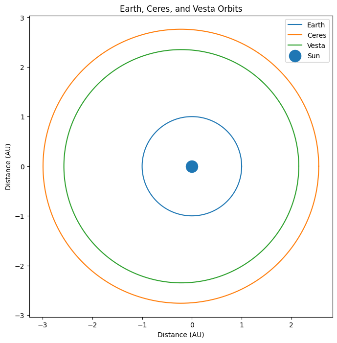
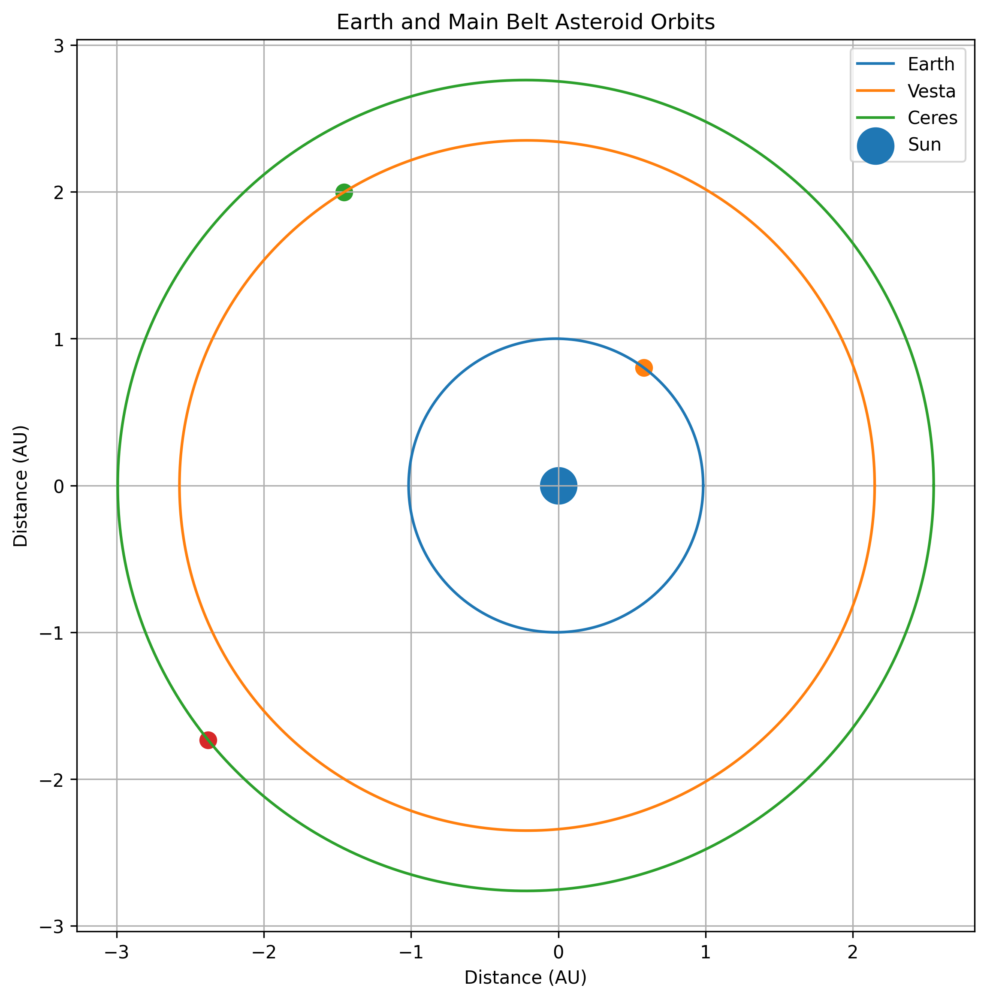

Simulate and visualize asteroid orbits using real orbital parameters.
1 Ceres
Main Belt Asteroid
Semi-major Axis: 2.77 AU
Eccentricity: 0.08
Orbital Period: 4.6 years


The simulation demonstrates the elliptical orbit of asteroid 1 Ceres around the Sun. Orbital parameters determine the size and shape of the orbit and can be used to predict future positions.